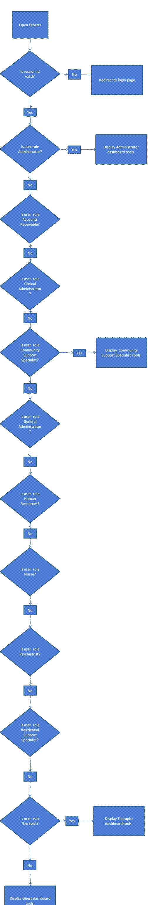

First of all, this spec is in no way complete. Comments and suggestions are welcome.
ECharts is an ERP system for behavioral health care agencies. It's aimed at making provider-patient interactions more effective and efficient. It will accomplish this through the use of a web interface with common web-type components, such as a user dashboard, dynamic tabs, and real-time patient search. The application will also provide easy access to a scheduler, patient creation/termination forms, and physician's order sheet. all of which will be described in detail below.
Another goal is to provide an electronic version of the health chart for any patient in the system. This makes it easier for providers to view and edit information for any patient as well as removing some of the complexity of maintaining a physical chart and the procedure in which the provider would be otherwise involved.
A messaging component will also be part of ECharts. This will allow any provider to leave a message on a patient's EHR for any other provider to view.
Since there will be a need to use paper documents created before this application was implemented, ECharts will facilitate scanning and viewing paper documents.
This spec doesn't make a point of discussing any of the underlying code, but rather what the user sees when they interact with ECharts. Specifically, this document is more concerned with the functionality and the interaction design, not the exact look and layout.
The first thing any user will see is their dashboard. This is the jump-off point to any other services the application may offer. This also means that each user may not have any tools in common with other users. However, the things that will be common is the logo in the upper left of the screen followed by the strip where dynamic tabs will be opened, followed by the dashboard area where the provider's tools will be visible.
The screen resolution target is 1024x768.
Here is a simple flowchart of how a user will access the dashboard.
